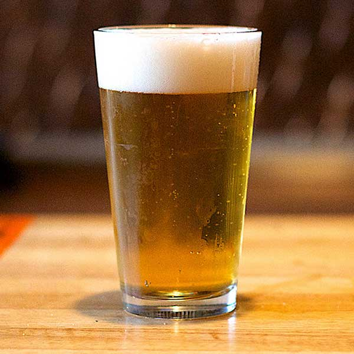

Beer

A refreshing pint of beer
A fatherhood staple, the frosty glass of beer has satified many a hardworking dad.
Ingredients
- 1 pint glass
- 1 pint of beer
Steps
- Make sure the glass is clean and dry.
- Open the pint of beer.
- Pour into the glass.
- Enjoy!
Home